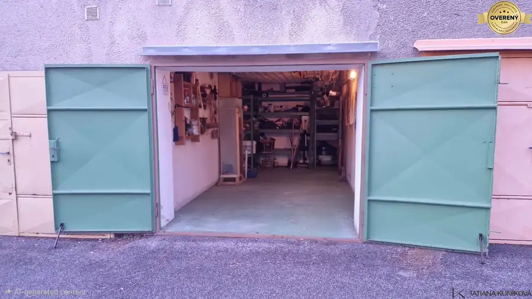
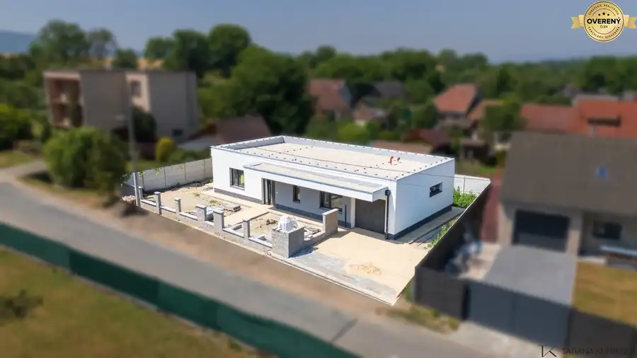
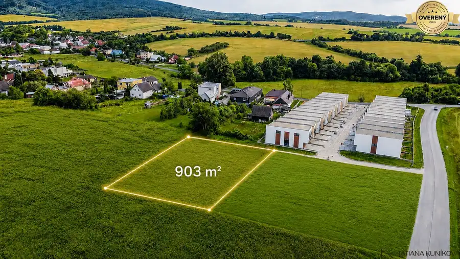

NA PREDAJ! 3i byt s 2 balkónmi - pôvodný stav, 69 m2, 28. októbra, TN
Trenčín
- Dispozícia3-izbový
- Plocha69 m²
- Poschodie3. z 6
- Stavpôvodný
- Vlastníctvoosobné
O nehnuteľnosti
TK Reality ponúka na predaj 3-izbový byt na ulici 28. októbra v Trenčíne. Tento svetlý byt je v pôvodnom stave, čo z neho robí ideálnu príležitosť pre kompletnú rekonštrukciu podľa vašich snov.
ZÁKLADNÉ INFORMÁCIE:
Výmera: 69 m² + 2 balkóny + pivnica.
Poschodie: 3. z celkových 6 (s novým veľkým výťahom).
Stav: Pôvodný – ideálny na realizáciu vlastného dizajnu a zmenu dispozície.
Ohrev vody: Samostatný, čo zaručuje nezávislosť a kontrolu nad spotrebou.
DISPOZÍCIA A BENEFITY:
Byt ponúka veľkorysý priestor a výborné presvetlenie vďaka dvom balkónom, ktoré rozširujú možnosti relaxu alebo praktického využitia.
Vstupná chodba.
Priestranná obývacia izba a dve spálne.
2x balkón (prístupné z dvoch rôznych izieb).
Kuchyňa.
Samostatná kúpeľňa a samostatné WC.
Praktický šatník / Sklad: Miestnosť (kumbál), ktorú môžete premeniť na moderný šatník alebo technické zázemie bytu.
BYTOVÝ DOM:
Vstupujete do zrekonštruovaného prostredia – bytový dom je zateplený a disponuje novým, nadštandardne veľkým výťahom, ktorý poskytuje maximálny komfort pri každodennom fungovaní.
LOKALITA:
Ulica 28. októbra je synonymom pre výborné bývanie v Trenčíne. Všetko dôležité (školy, obchody, služby) máte doslova na pár krokov, pričom lokalita zostáva pokojná a plná zelene.
DÔLEŽITÉ:
Majiteľ si z dôvodu zachovania súkromia neželal zverejniť fotografie interiéru. Pre autentický zážitok z priestoru a posúdenie jeho potenciálu odporúčam osobnú obhliadku. Byt je pripravený na odovzdanie novému majiteľovi.
Príďte sa presvedčiť o potenciáli tohto bytu osobne. Vážnych záujemcov pozývam na obhliadku!
V prípade záujmu o detailnejšie informácie alebo obhliadku nehnuteľnosti nás neváhajte kontaktovať:
Tatiana Kuníková
TK Reality
Tel.:
E-mail:
Uvedená cena je konečná, pokiaľ sa zmluvné strany nedohodnú inak a nenavyšuje sa o odmenu sprostredkovateľa, v cene je zahrnuté právne poradenstvo, vyhotovenie kúpnych zmlúv, hypotekárne poradenstvo a uhradenie správneho poplatku za návrh na vklad do katastra nehnuteľností.
Parametre
| Úžitková plocha | 69 m² |
|---|---|
| Poschodie | 3/vyššie poschodie |
| Počet poschodí | 6 |
| Vlastníctvo | osobné |
| Stav | pôvodný |
| Odvoz odpadu | áno |
| Plyn | áno |
| Kúpeľňa | áno |
| Vykurovanie | spoločné |
| Balkón | áno - 2 |
| Pivnica | áno |
| Výťah | áno |
| Parkovanie | verejné |
| Postavené z | tehla |
| Zateplený objekt | áno |
| Energetický certifikát | áno |
| Bezbariérový prístup | áno |
| Orientácia | juhozápadná |
| Dátum zverejnenia | 4. 5. 2026 |
Kde to je
Mohlo by Vás zaujímať

Ostatné4 51 000 €NA PREDAJ! Garáž 21m2 s vlastnou elektrinou a bonusovým príjmom TN-Juh Trenčín 21 m² Základné parametre : Výmera: 21 m² Materiál: Tehlová konštrukcia Inžinierske siete: Vlastná, samostatná elektrina (vlastný elektromer) Veľký…
Rodinné domy10 359 900 €NA PREDAJ! Moderná 4i novostavba s garážou, pozemok 456m2, Soblahov TN Soblahov 4-izbový125 m² TK Reality exkluzívne ponúka na predaj moderný, samostatne stojaci 4-izbový rodinný dom s garážou vo vyhľadávanej lokalite obce Soblahov, len na skok…
Pozemok4 198 660 €NA PREDAJ! Stavebný pozemok 903m2 so sieťami, Mníchova Lehota, Trenčín Mníchova Lehota 903 m² TK Reality ponúka na predaj exkluzívny stavebný pozemok s ideálnou výmerou 903 m², situovaný v novej štvrti obľúbenej obce Mníchova Lehota (len 10…